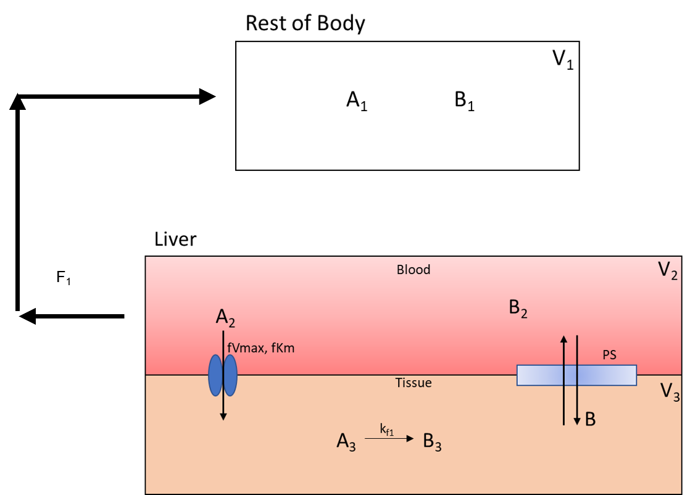
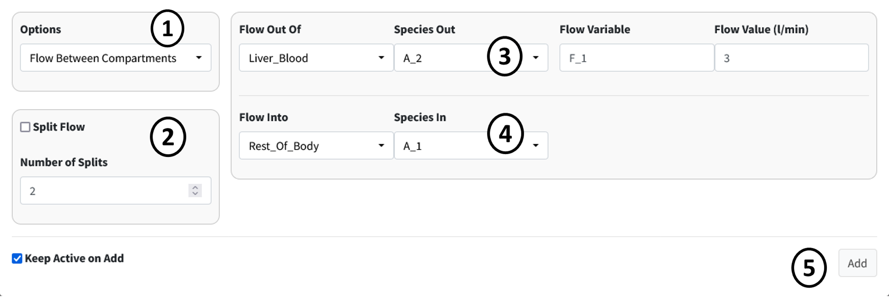
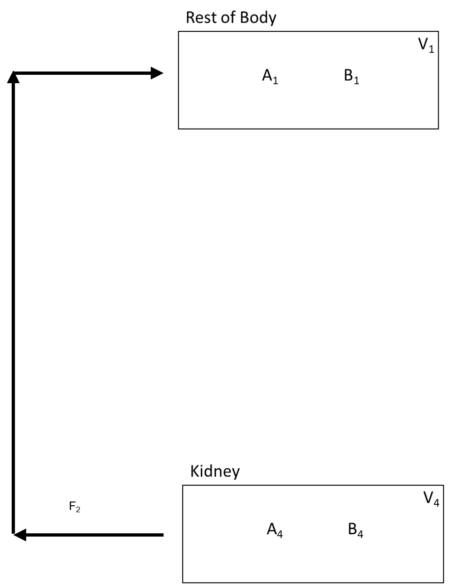
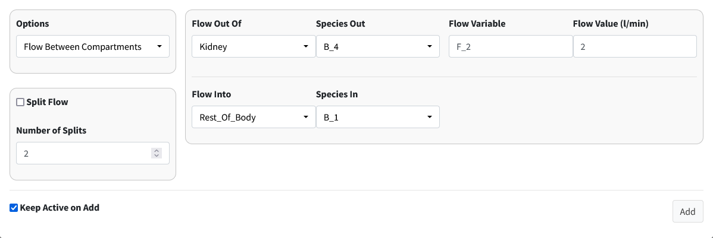
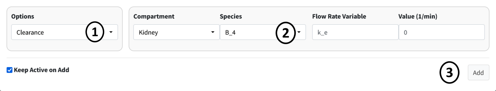
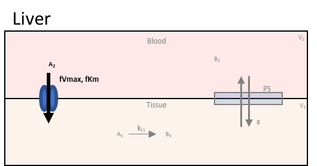
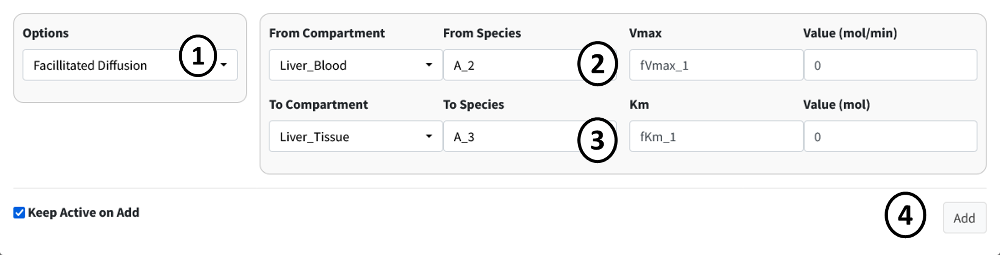

Add Compartment Inputs/Outputs
In this section of the tutorial, we will cover how to add flows, inputs, and outputs of compartments to the model. Begin by scroling to the Input/Output box on the Create Model tab. Press the addition button to begin adding the below flows between species information. Again, here is the overall flow model:

In each subsequent section we break down the flows into individual components.
1. Flow Out of Body
The flow out of the Rest_Of_Body is split into two flow rates as it moves species A and B to the Liver_Blood and Kidney. Below is the part of the flow diagram we will be entering:
{kind=link}
In Options select Flow Between Compartments. This is used to account for flows leaving one compartment and entering one or more compartments.
Select the Split Flow checkbox. This option is selected when one outflow is being split into multiple flows. Keep Number of Splits to 2 as we are splitting the flow to two compartments.
Set the information for the compartment the flow is leaving from. It has the following specifications:
Flow_Out_of: Rest_Of_Body
Species Out: A_1
Flow Variable: F
Flow Value: 5
Current specifications need to have species in flow entered one at a time. Meaning a new flow will be added for species B. With all parameters, values can be changed later in the parameter section.
Set the information from the first split flow into Liver_Blood. Enter the following:
Flow_Out_of: Liver_Blood
Species Out: A_2
Flow Variable: F_1
Flow Value: 3
Set the information from the second split flow into Kidney. Enter the following:
Flow_Out_of: Kidney
Species Out: A_4
Flow Variable: F_2
Flow Value: 2
Press the Add button to add this flow. You can select the Keep Active checkbox on the bottom of the page to prevent this page from closing on pressing the add button.

Repeat the previous steps for species B. This should involve only changing the Species dropdowns.

Note
When adding B, we are reusing the flow variables F, F_1, and F_2. BioModME allows multiple saving of parameters but will check that the parameters have the same base unit. If not, the parameter will be rejected. The value for the parameter will overwrite on each new overwrite of the parameter.
2. Flow Back: Liver to Body
The flow back from the liver to the rest of the body looks like:
{kind=link}

This is like the previous step but with the compartments switched around.
Steps:
Make sure Options is still on Flow Between Compartments.
Turn off Split Flow.
Set the information for the compartment the flow is leaving from. It has the following specifications:
Flow Out Of: Liver_Blood
Species Out: A_2
Flow Variable: F_1
Flow Value: 3
Set the information for the compartment the flow is entering. It has the following specifications:
Flow Into: Rest_Of_Body
Species In: A_1
Press the Add button to add this flow.

Repeat the previous steps for species B. This should involve only changing the Species dropdowns.

3. Flow Back: Kidney to Body
The flow back from the kidney to the rest of the body is:
{kind=link}

Steps:
Make sure Options is still on Flow Between Compartments.
Check that Split Flow is off.
Set the information for the compartment the flow is leaving from. It has the following specifications:
Flow Out Of: Kidney
Species Out: A_4
Flow Variable: F_2
Flow Value: 2
Set the information for the compartment the flow is entering. It has the following specifications:
Flow Into: Rest_Of_Body
Species In: A_1
Press the Add button to add this flow.

Repeat the previous steps for species B. This should involve only changing the Species dropdowns.

4. Clearance of A From Kidney
Drug A is excreted from the kidney at a constant rate. The isolated process is shown below:

Steps:
Select Clearance in the Options dropdown.
Enter the following information in the main box:
Compartment: Kidney
Species: B_4
Rate: k_e
Press the Add button to add the clearance of B from the kidney.

5. Facilitated Diffusion of A
The next two seconds will look at diffusion processes from the liver blood to the liver tissue and back. Below is the facilitated diffusion of molecule A from the liver blood to the liver tissue.
{kind=link}

Steps:
Select Facilitated Diffusion in the Options dropdown.
Enter the following information in the first row of the main box:
From Compartment: Liver_Blood
From Species: A_2
Vmax: fVmax_1
Km: fKm_1
Enter the following information in the second row of the main box:
To Compartment: Liver_Tissue
From Species: A_3
Press the Add button to add this facilitated diffusion flow to the model.

6. Simple Diffusion of B

Steps:
Select Simple Diffusion in the Options dropdown.
Enter the following information in the first row of the main box:
Compartment: Liver_Blood
Species: B_2
Diffusivity Coefficient: PS
Enter the following information in the second row of the main box:
Compartment: Liver_Tissue
Species: B_3
Note
The order of entered compartments and species does not matter for simple diffusion.
Press the Add button to add this simple diffusion flow to the model.

This should be the last term entered in the Input/Output box. There should be nine terms in the results table.